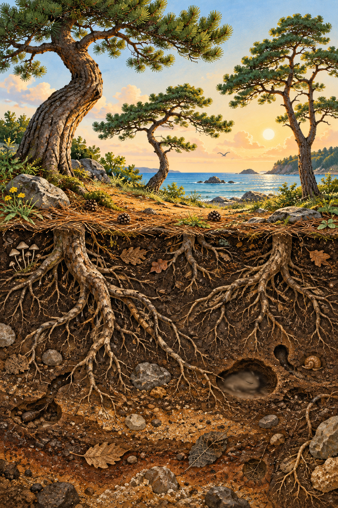

SONGDO · NATURE PLAY
솔밭 아래
누가 있을까요?
송도에서 만나는 작은 생태 탐험.
보고, 듣고, 돌려보며 찾아요.
QR로 체험 열기QR은 웹페이지 입장용입니다.
왼쪽 그림은 카메라 인식용으로 준비 중입니다.
왼쪽 그림은 카메라 인식용으로 준비 중입니다.
공개 연습판 · 그림 인식 AR은 준비 중
상상아트 기획·제작 이미숙

송도에서 만나는 작은 생태 탐험.
보고, 듣고, 돌려보며 찾아요.
공개 연습판 · 그림 인식 AR은 준비 중
A3 가로 인쇄 시안입니다. 무광 용지로 출력하고, QR과 왼쪽 그림을 각각 충분히 크게 보이게 놓으세요. 왼쪽 그림만 이미지 추적 대상으로 사용할 예정입니다. 이 그림은 실제 송도솔밭을 촬영한 사진이 아닌 창작 삽화입니다.